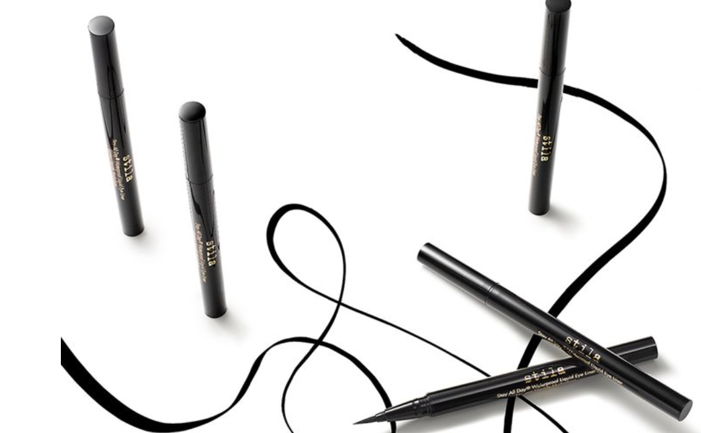
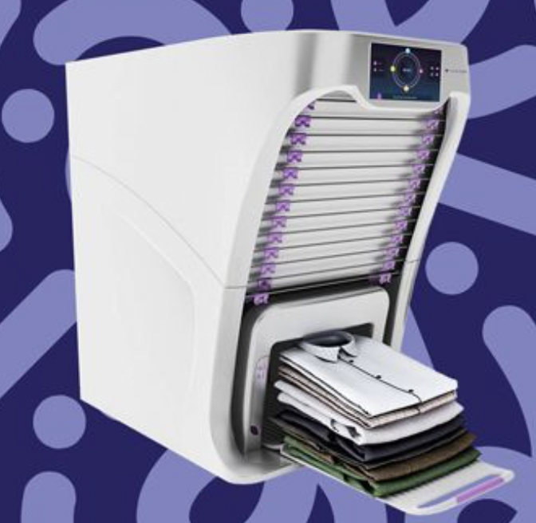
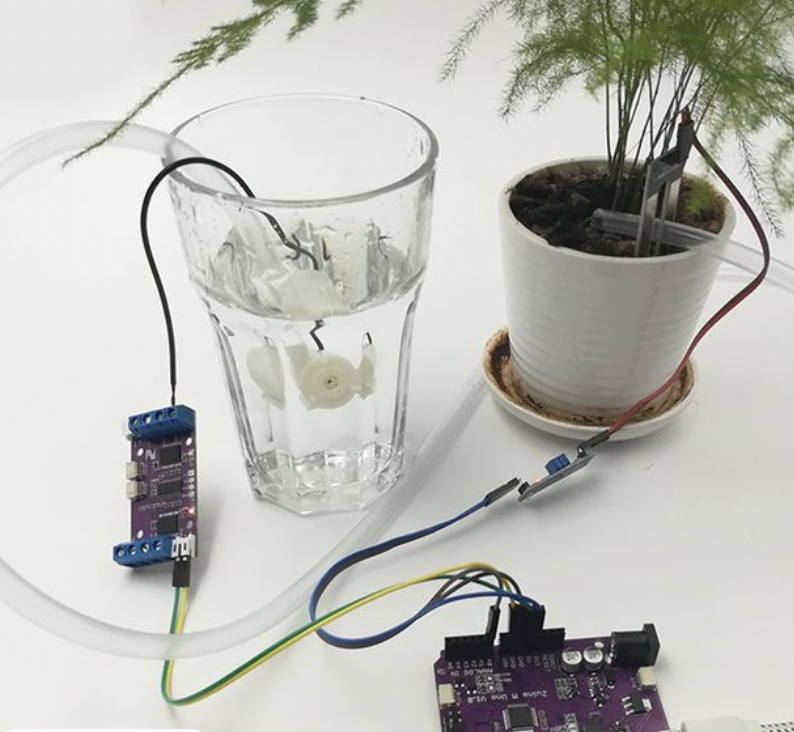

<div class="textcontainer">
<br></br>
<h3>Week 1: Final Project Proposal</h3>
<p class = "margin"></p>
Here are 3 ideas for my final project
<p class = "margin"></p>

<h4>Idea 1 : Automatic eyeliner</h4>
<p class = "margin"></p>
A small machine that is small enough to fit into a purse. Either it will identify for you what eyeshape you have and whether you have a monolid or double lid or there will be a screen/ buttons where you can input what your features are. The user will have to input whether it's the right or left eye and the machine will draw out a perfect liner.
<p class = "margin"></p>

<h4>Idea 2: Laundry Folder</h4>
<p class = "margin"></p>
A machine that identifies for example whether an item is a shirt (long sleeve or short sleeve) or pants (shorts or long pants) or even tank top, undergarments potentially, and socks are under consideration, and folds them accoding to my taste (taste would probably not be adjustable). The machine would scan the clothing, identify what it is then proceed with the proportionate folds for it.
<p class = "margin"></p>

<h4>Idea 3: Automatic plant trimmer </h4>
<p class = "margin"></p>
An issue I've had in the past and I know many other plant owners have had is difficulty knowing when to cut/harvest their plants (basil for example is a bit difficult because to encourage growth you must remove about 1/3 of the leaves each month and I always forget). I would love to try to design a machine that can identify when to cut a plant and do the cutting for you, potentially also having an automatic watering system. I would aim for 1-2 plants to identify to start with.
</div>